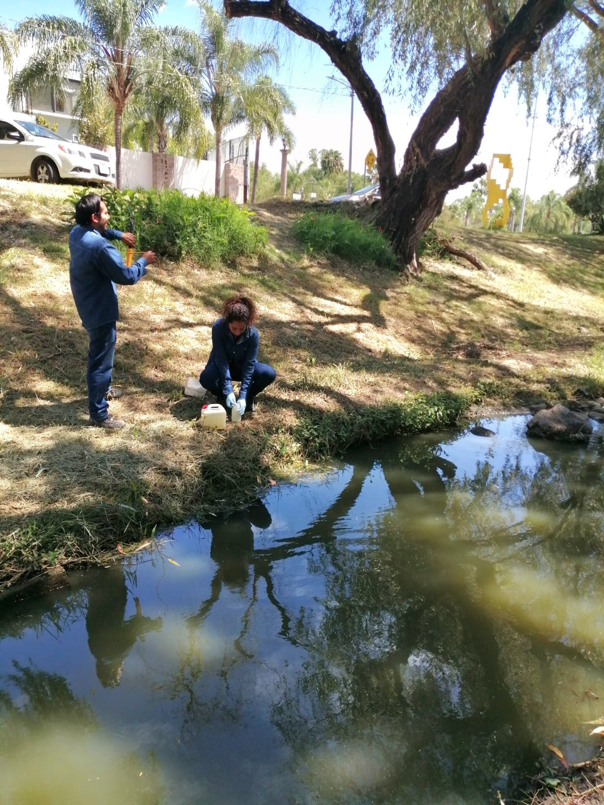
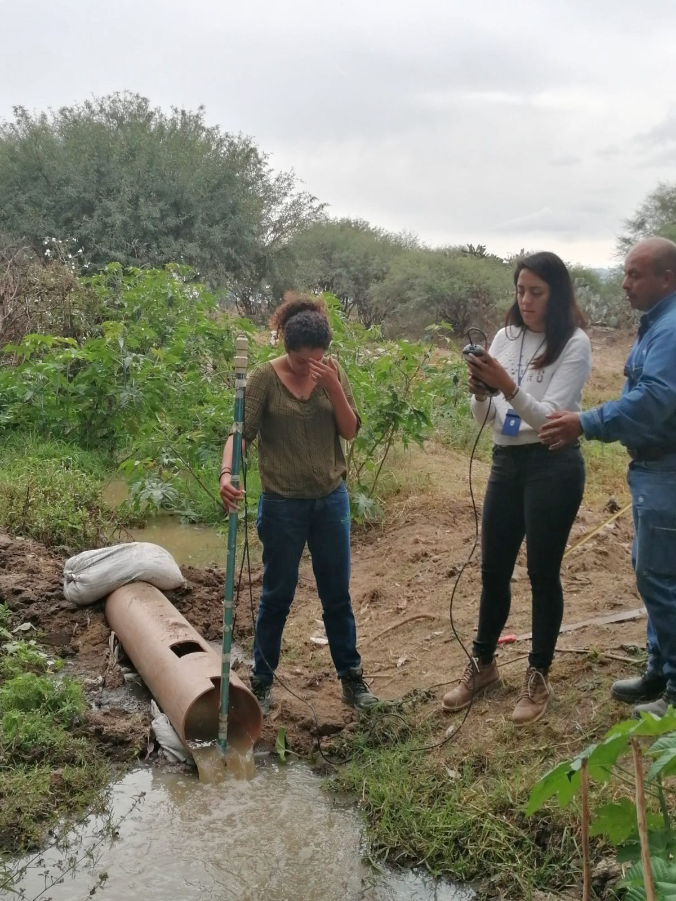
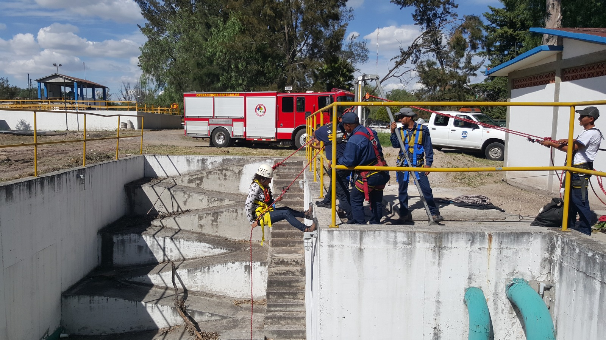
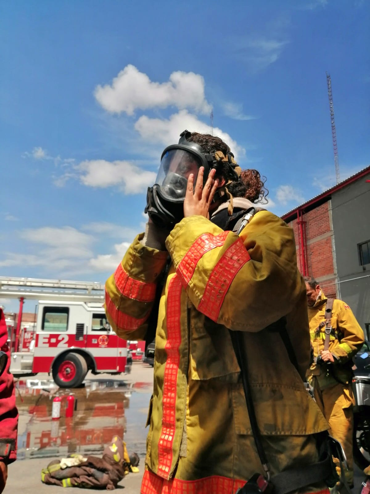
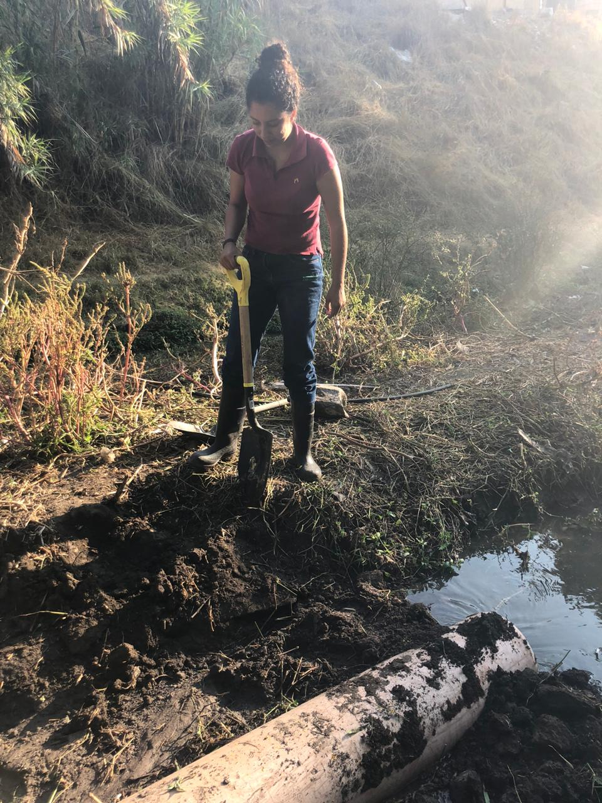

Sobre mí
Soy una profesional con más de 5 años de experiencia en el sector ambiental, especializada en tratamiento y cumplimiento normativo de agua en México. También cuento con 3 años de experiencia en gestión de proyectos ambientales dentro del sector energético de gas natural.
Actualmente curso un bootcamp de Data Science y mi objetivo es integrar mis conocimientos ambientales con tecnologías modernas, análisis de datos, modelos predictivos y sistemas GIS (ESRI), que utilicé para registrar y monitorear puntos de muestreo de agua en campo.
Mi enfoque profesional combina sostenibilidad, tecnología futurista y ciencia de datos aplicada al medio ambiente.
Trayectoria
-
Environmental Biochemist — Agua y Cumplimiento Normativo
2018–2023Supervisión de tratamiento de agua, cumplimiento regulatorio, monitoreo, muestreo y análisis.
-
Gestión de Proyectos Ambientales — Sector Energético (Gas Natural)
2023–2026Coordinación de proyectos ambientales, reportes regulatorios, auditorías y gestión de riesgos.
-
Bootcamp — Data Science
2026Python, SQL, Machine Learning, análisis de datos, visualización, estadística y GIS aplicado.
Proyectos

Monitoreo de Calidad del Agua
Muestreo y medición de parámetros fisicoquímicos en campo.
Tecnologías: ESRI, sensores multiparamétricos, protocolos NOM
Inspección de Descargas
Evaluación de cumplimiento normativo en puntos de descarga industrial.
Tecnologías: NOM-001, NOM-002, equipos de medición
Seguridad Ambiental en Instalaciones
Supervisión de prácticas seguras en infraestructura energética.
Tecnologías: protocolos de seguridad, inspección técnica
Trabajo de Campo Ambiental
Actividades de inspección, muestreo y levantamiento de datos ambientales.
Tecnologías: herramientas de campo, análisis físico-químico
Evaluación de Infraestructura Ambiental
Revisión de instalaciones y sistemas relacionados con agua y energía.
Tecnologías: inspección técnica, gestión ambientalGalería de Campo Ambiental
Contacto
- Email: angie308.caballero@gmail.com
- GitHub: github.com/Angie30819
- LinkedIn: linkedin.com/in/angelica-caballero-417a07405